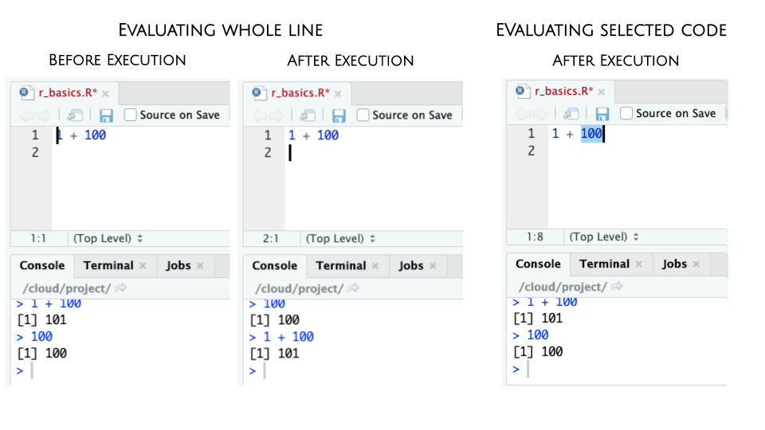

R Basics
Using R in the console
The most basic way to interact with R is to type code directly in the console
- type expression to evaluate
- hit return
- output of the evaluation of the expression is printed to the console below
The simplest thing you could do with R is do arithmetic.
1 + 100## [1] 101If you type in an incomplete command, R will wait for you to complete it:
1 ++Any time you hit return and the R session shows a + instead of a >, it
means it’s waiting for you to complete the command. If you want to cancel
a command you can hit Esc and RStudio will give you back the > prompt.
Working in scripts
To make code and workflow reproducible and easy to re-run, it’s better to save code in a script and use the script editor to edit it. This way, there is a complete record of the analysis.
Creating a new script
Click on File > New File > R Script. Click on the save icon or (like any other file) using keyboard shortcut CTRL / CMD + S


Executing commands from scripts
RStudio allows you to execute commands directly from the script editor by using Ctrl + Enter shortcut (on Macs, Cmd +
Return will work, too).
When you execute command from a script, the line of code in the script indicated by the cursor or all of the commands in the currently highlighted will be sent to the console. You can find other keyboard shortcuts in Tools > Keyboard Shortcuts Help or in the RStudio IDE cheatsheet.

Using R as a calculator
When using R as a calculator, the order of operations is the same as you would have learned back in school.
From highest to lowest precedence:
- Parentheses:
(,) - Exponents:
^or** - Multiply:
* - Divide:
/ - Add:
+ - Subtract:
-
3 + 5 * 2## [1] 13Use parentheses to group operations in order to force the order of evaluation if it differs from the default, or to make clear what you intend.
(3 + 5) * 2## [1] 16Really small or large numbers get a scientific notation:
2/10000## [1] 2e-04Which is shorthand for “multiplied by 10^XX”. So 2e-4
is shorthand for 2 * 10^(-4).
You can write numbers in scientific notation too:
5e3 # Note the lack of minus here## [1] 5000Mathematical functions
R has many built in mathematical functions. To call a function, we can type its name, followed by open and closing parentheses. Anything we type inside the parentheses is called the function’s arguments:
sin(1) # trigonometry functions## [1] 0.841471log(1) # natural logarithm## [1] 0log10(10) # base-10 logarithm## [1] 1exp(0.5) # e^(1/2)## [1] 1.648721Don’t worry about trying to remember every function in R. You can look them up on Google, or if you can remember the start of the function’s name, use the tab completion in RStudio.
This is one advantage that RStudio has over R on its own, it has auto-completion abilities that allow you to more easily look up functions, their arguments, and the values that they take.
Typing a ? before the name of a command will open the help page
for that command. As well as providing a detailed description of
the command and how it works, scrolling to the bottom of the
help page will usually show a collection of code examples which
illustrate command usage. We’ll go through an example later.
Variables and assignment
We can store values in variables using the assignment operator <-, like this:
x <- 1/40Notice that assignment does not print a value. Instead, we stored it for later
in something called a variable. x now contains the value 0.025:
x## [1] 0.025Look for the Environment tab in one of the panes of RStudio, and you will see that x and its value have appeared. Our variable x can be used in place of a number in any calculation that expects a number:
log(x)## [1] -3.688879Notice also that variables can be reassigned:
x <- 100x used to contain the value 0.025 and now it has the value 100.
Assignment values can contain the variable being assigned to:
x <- x + 1 #notice how RStudio updates its description of x on the top right tab
y <- x * 2- The right hand side of the assignment can be any valid R expression.
- The right hand side is fully evaluated before the assignment occurs.
It is also possible to use the = operator for assignment:
x = 1/40But this is much less common among R users. The most important thing is to
be consistent with the operator you use. There are occasionally places
where it is less confusing to use <- than =, and it is the most common
symbol used in the community. So the recommendation is to use <-.
On variable names
Variable names can contain letters, numbers, underscores and periods. They cannot start with a number nor contain spaces at all.
Different people use different conventions for long variable names, these include
- periods.between.words
- camelCaseToSeparateWords
- snake_case: underscores_between_words
While I suggest you use snake_case, ultimately what you use is up to you, but be consistent.
Even more important is that variable names are descriptive enough of what they contain. So long and descriptive is better than shorter and cryptic.
Comparing things
We can also do comparison in R:
x <- 1x < 2 # less than## [1] TRUEx <= 1 # less than or equal to## [1] TRUEx > 0 # greater than## [1] TRUEx >= -9 # greater than or equal to## [1] TRUEx == 1 # equality (note two equals signs, read as "is equal to")## [1] TRUE1 != 2 # inequality (read as "is not equal to")## [1] TRUEx %in% c(1, 5) # membership (read as "is member of")## [1] TRUEA word of warning about comparing numbers: you should
never use == to compare two numbers unless they are
integers (a data type which can specifically represent
only whole numbers).
Controlling flow using logical statements
Comparing a single value results in TRUE or FALSE. This feature allows us to build conditional statements to control execution flow.
if(x > 5){
print("x is greater than 5")
}else{
print("x is less than 5")
}## [1] "x is less than 5"
Comments
You can add comments to your code by using a hash symbol
#. Any text on a line of code following#is ignored by R when it executes code.